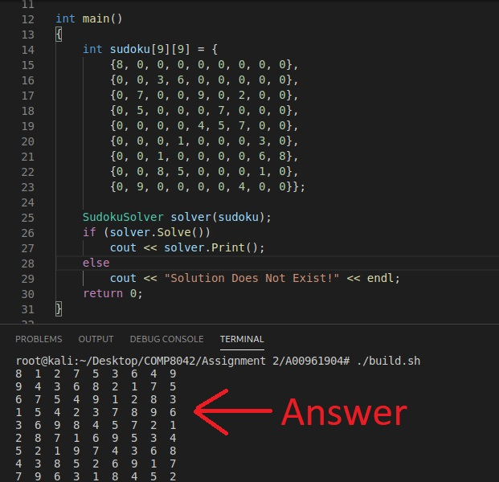

This is one of the assignment I did for the COMP 8042 course in BCIT. The goal of this assignment is to develop a solver for a 9 X 9 sudoku puzzle using the algorithm I learned in the couse. I had plently of time to do this assignment, so I decided to do something different.
The simple approach is to use pure backtracking algorithm. For each cell in the sudoku matrix, try value from 1-9 and step back if the solution violates any of the rules. The rules are:
- Only the numbers from 1 through 9 can be used
- Each 3x3 box can only contain number 1 to 9 once
- Each vertical column can only contain each nunmber 1 to 9 once
- Each horizontal row can only contain each number 1 to 9 once
- Each cell must have a value (obviously)
The issue with this approach is that it will take a very long time to find the solution if the sudoku problem only have few known values. Also, the laptop I am using is a 200$ Lenovo that runs on potato (obviously not true), so simple approach is not going to work.
With few searchs online, I found a better solution from someone's Blog post ( here ). Bascially, sudoku matrix can be seen as an "exact cover" problem, and the algorithm used to solve this problem is called "algorithm X". The problem consist of of a set of constrainsts. Everytime a entry (subset of the solution) is selected, we remove the constraints it satisfies. If theres no more entry to selelct while there are still constraints left, we backtrack and select a different entry (recursively). Do so unitll there's no constraint left, and there we have a solution.
In order to manipulate a giant 2-dimension of constraints, he uses a technique called "dancing links" Dancing links is a way of connecting non empty node in a sparse matrix.
The Blog post goes into great detail on how both algorithm X and dancing link works. If you are interested in learning more about the solution, make sure to read his post. Anyways, below github link has the C++ solution I came up with after I read his post. It solved an expert level sudoku in under a sec, and I got 95% on this assignment. here

program output